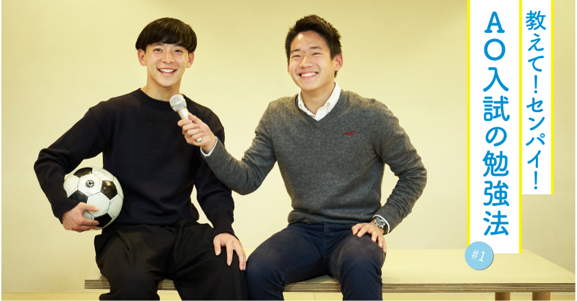

Interview


受験生が、AO義塾の卒業生にインタビューするこの企画、その名も「教えて！センパイ！AO入試の勉強法」。第1回に来てくれたの受験生のヨダ君と卒業生の渡辺夏彦センパイ。現在慶應SFCに進学して、体育会ソッカー部に所属している夏彦センパイ。高校時代には、日本代表に選ばれるほどのサッカーの実力の持ち主。部活に受験に大忙しだった高校時代に、夏彦センパイがAO入試を乗り越えた勉強法とは！？
受験生ヨダくん
卒業生夏彦センパイ
→
受験生が、AO義塾の卒業生にインタビューするこの企画、その名も「教えて！センパイ！AO入試の勉強法」。第1回に来てくれたの受験生のヨダ君と卒業生の渡辺夏彦センパイ。現在慶應SFCに進学して、体育会ソッカー部に所属している夏彦センパイ。高校時代には、日本代表に選ばれるほどのサッカーの実力の持ち主。部活に受験に大忙しだった高校時代に、夏彦センパイがAO入試を乗り越えた勉強法とは！？
受験生ヨダくん
卒業生夏彦センパイ
→
早速なんですが、志望校っていつ決めましたか？
入塾したときにはもうSFCにしようと思ってたな。多分4月くらい。
はやい！どんな志望理由書を書いたんですか？
もともと、小さい頃からサッカーをやって日本代表にも選んでもらって気づいたことなんだけど、サッカー選手ってほんとに指導方法によって大きく実力が変わってくるんだよね。良い指導方法のもと練習すれば、ポテンシャルが花開くし、そうでないと、なかなか芽が出なかったりする。
特にスペインに行ったときに、向こうは小さい頃から一貫した指導方針のもと育てられてるのを知って、これじゃあ世界一のチームが生まれるのも必然だなって思ったんだ。だから、日本のコーチ陣がもっともっとサッカー指導の向上を目指せるような環境を作りたいってことを志望理由書に書いた。
そんなことSFCでできるんですか？
うん、そこがSFCを受けた理由だね。SFCのシラバスって見たことある？誰でもSFCで開講している授業一覧をwebで見ることができて、僕も受験時代にすごい見てたんだけど、とにかく、授業の種類が豊富で。スポーツビジネスを研究してる教授もいれば、経営戦略を専門にしている教授まで、あらゆる分野の先生が授業をやってるんだ。だから、授業の組み合わせ次第で、自分にとって必要なものを吸収できるのが、良いなって思った。
実際、夏彦さんの志望理由書読ませてもらったんですが、サッカーの育成に関する知識がめちゃくちゃあって正直びっくりしました(笑)。
SFCの場合、志望理由書って2000文字あるでしょ？高校のレポートでもそんな文字数書いたことなかったし、書き始めたときは、「ヤバイ、俺できるかな？」って感じだったんだよね。それで、いざ書き始めたらやっぱり全然書けなくて(笑)。AO義塾の授業で、「日本とスペインの指導って具体的に何が違うの？」って聞かれても、「えっと・・。とにかく質が違います。」みたいなことしか言えなくて、最初は本当にボロボロだった。
そこをどうやって・・・。
AO義塾の授業中だったんだけど、「Amazonで”サッカー/育成”で調べて」ってシェルパに言われたのね。それで、「検索して出てきたトップ3冊を買って」って。その場で購入ボタン押して、翌日届いたらすぐに読み始めたな。その時は、「えっ、ネットで調べたほうが早いし、安いし・・。」って思ったけど、ひとつのテーマを深く知るにはやっぱり本じゃないと、どうしてもわからないことがあるんだって本を読んでて気づいた。志望理由書を書く時にはテーマに関する知識量がすごく大事になってくるから、まずは本を読んで書くための材料を集めないとだね。
あ、あとスポーツジャーナリストの人に話を聞きに行ったっていうのも本当ですか？
うん、本当。
そんなことやっていいんですか？高校生で。
そう、思うよね(笑）。だけど、きちんと礼儀正しくしていれば、自分が話を聞きたいひとにメールを出して会いにいくっていうのは、たとえ高校生でも積極的にやって良いと思う。特にAO入試の場合は、自分が興味あるテーマに沿って志望理理由書を書いていくわけだから。本で読んだ知識をさらに深めるためにも、実際にひとの話を聞くっていうのは大事。
やっぱり大変ですか？志望理由書を書ききるのって。
そりゃ、もう・・。だけど、本を読んでひとにあって、文章にしてっていうサイクルを繰り返していくと、無限に疑問が生まれてくるんだよね。それは、自分がサッカーが好きで将来日本サッカー界に役立ちたいっていう想いがあるから、単に受験に合格するためにやってるんじゃないって思えたし、自分の未来に繋がってるって思えて、大変だけどやりがいある時間だったよ。
なるほど、自分はまだまだ時間かかりそう(笑)。
受験期は、ほんとうに思いっきり頑張って。一生懸命頑張った時間はきっと財産になるから。
はい！頑張ります。
今日は、ありがとう。
ありがとうございました！